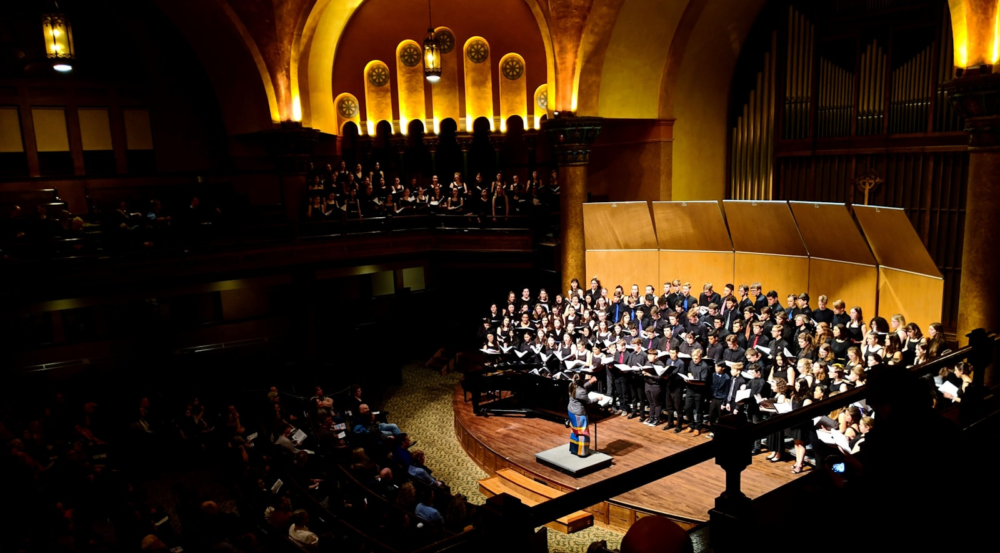

PS
Vocal Structure
박성태
발성 구조와 보컬 테크닉의 기준을 세우고 재현 가능한 톤을 정밀하게 설계합니다.
자세히 보기 >NUVOCAL flagship vocal system
본질만 남기다. 그리고 완벽해지다.
발성, 보컬 테크닉, 즉흥가창, 실전무대까지 한 흐름으로 묶어 무대 위에서 다시 꺼내 쓸 수 있는 소리를 만드는 12주 플래그십 프로그램.
12주 코스 · 5인의 메인 멘토 · NAVC CARE+ 연동
한 시즌을 통째로 설계하는 12주 코스.
박성태, 전다빈, 윤수용, 길구, Whitney Sol이 함께 설계합니다.
좋은 소리를 만드는 순간보다, 다시 재현하는 능력에 집중합니다.
수강 후에도 결과가 남도록 유지 루틴까지 연결합니다.
Precision Coaching
NAVC는 감각을 칭찬하고 끝나는 수업이 아닙니다. 무엇이 바뀌었는지, 왜 바뀌었는지, 다음 무대에서도 같은 결과를 낼 수 있는지를 끝까지 확인합니다.
Performance Mindset
MENTO 세션은 긴장과 편차를 줄이는 복구 루틴을 설계합니다. 잘할 때의 감각을 기억하는 것이 아니라, 흔들릴 때 돌아오는 방법을 몸에 남기는 과정입니다.
After Care
NAVC CARE+는 수강이 끝난 뒤에도 좋은 상태를 유지하도록 돕는 사후 관리 프로그램입니다. 배운 기술이 사라지지 않도록 꾸불이반, 블랙가스펠콰이어, CARE+ 클래스로 연결합니다.

Meet the coaches.
발성 구조, 테크닉, 즉흥, 퍼포먼스, 디렉션까지 다른 강점을 가진 코치들이 한 사람의 소리가 실제 결과로 이어지도록 함께 설계합니다.
Vocal Structure
발성 구조와 보컬 테크닉의 기준을 세우고 재현 가능한 톤을 정밀하게 설계합니다.
자세히 보기 >Technique Build
고음 전환과 리듬 디테일을 세밀하게 교정해 실전 가창의 정확도를 끌어올립니다.
Improvisation
즉흥 가창과 실전 퍼포먼스 흐름을 연결해 무대 위 반응 속도와 감각을 다듬습니다.
자세히 보기 >Stage Performance
곡 해석, 딕션, 감정 전달을 밀도 있게 다듬어 실제 무대의 설득력을 끌어올립니다.
Vocal Direction
개별 보컬 컬러를 살리면서도 전체 결과가 정리되도록 디렉션과 피드백 흐름을 잡아줍니다.
Compare the lineup.
Apple의 비교 스트립처럼 핵심 프로그램을 한 줄에서 빠르게 읽을 수 있게 정리했습니다. NAVC를 기준으로 집중반, 하모니, 1:1 코칭, 통기타, 재즈피아노, 미디작곡까지 나란히 비교할 수 있습니다.
Studio and consultation.
Apple식 정보 밀도로 정리한 방문 안내 섹션입니다. 위치 확인, 지도 이동, 공식 채널 연결을 한 흐름 안에 배치했습니다.
Visit the studio
오프라인 수업과 상담이 진행되는 실제 공간입니다. 첫 방문에서도 동선을 바로 파악할 수 있게 핵심 정보만 간결하게 배치했습니다.

Official channels
Instagram, Kakao Open Chat, YouTube를 한곳에 모았습니다. 가벼운 문의부터 방문 상담 연결까지 같은 맥락 안에서 이어집니다.
Ready to begin?
NAVC를 기준으로 라인업을 비교하고, 멘토를 확인하고, 상담까지 바로 이어질 수 있도록 Apple 제품 상세페이지의 흐름으로 다시 설계했습니다.